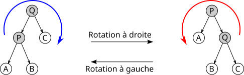

Arbres binaires
Pré-requis
Si les listes sont maîtrisées, ceci ne devrait presque être qu'une formalité.
Arbre binaire
Un arbre binaire est soit vide, soit une structure composée d'une clé (ou étiquette), ainsi que de 2 arbres, le sous-arbre gauche (sag) ainsi que le sous-arbre droit (sad). C'est un arbre très particulier car on distingue bien la position de chaque sous-arbre.

Exercice
Proposez une implémentation python immuable du type ArbreBin.
Exercices
Implémenter les fonctions primitivees de base:
cle[T](a: ArbreBin[T]) -> intsag[T](a: ArbreBin[T]) -> ArbreBin[T]sad[T](a: ArbreBin[T]) -> ArbreBin[T]creer[T](a: ArbreBin[T]) -> ArbreBin[T]est_vide[T](a: ArbreBin) -> bool
Implémenter en conséquence les fonctions:
est_feuille[T](a: ArbreBin) -> booltaille[T](a: ArbreBin[T]) -> intcalcule le nombre de noeuds d'un arbresomme(a: ArbreBin[int]) -> intcalcule la somme des clés d'un arbrehauteur(a: ArbreBin) -> intcalcule la hauteur d'un arbre- (je suis lutin qui reçoit un arbre, je pose la même question à mon sag et mon sad, qu'est-ce que je fais avec leurs réponse?)
sont_egauxrenvoie si 2 arbres sont identiques.
Conversion en liste
Écrire une fonction to_list[T](a: ArbreBin[T]) -> list[T] qui renvoie une liste (python) comportant toutes les clés d'un arbre.
Recherche dans un arbre binaire
Écrire une fonction recherche[T](i: T, a: ArbreBin[T]) -> bool qui recherche une valeur dans un arbre binaire quelconque (parcours exhaustif).
La fonction doit renvoyer True si la valeur i est présente dans l'arbre, False sinon.
>>> recherche(21, exemple())
True
>>> recherche(9, exemple())
True
>>> recherche(100, exemple())
False
>>> recherche(42, ARBRE_VIDE)
False
Indication: Réfléchissez aux cas de base et au cas récursif. Si l'arbre n'est pas vide et que la clé de la racine n'est pas celle recherchée, où peut-elle se trouver ?
Compter les feuilles
Écrire une fonction compter_feuilles[T](a: ArbreBin[T]) -> int qui compte le nombre de feuilles dans l'arbre.
>>> compter_feuilles(ARBRE_VIDE)
0
>>> compter_feuilles(creer_feuille(1))
1
>>> compter_feuilles(creer(10, creer_feuille(5), creer_feuille(15)))
2
>>> compter_feuilles(exemple())
5
Indication: Attention, cette fonction a trois cas à considérer : l'arbre vide, la feuille, et le cas général.
Liste des feuilles
Écrire une fonction liste_feuilles[T](a: ArbreBin[T]) -> list[T] qui renvoie la liste des clés des feuilles de l'arbre, parcourues de gauche à droite.
>>> liste_feuilles(ARBRE_VIDE)
[]
>>> liste_feuilles(creer_feuille(42))
[42]
>>> liste_feuilles(creer(10, creer_feuille(5), creer_feuille(15)))
[5, 15]
>>> liste_feuilles(exemple())
[9, 15, 19, 25, 32]
Indication: La structure est similaire à compter_feuilles, mais au lieu de compter, on construit des listes.
Arbre aléatoire
Un arbre parfait est un arbre dont tous les niveaux sont remplis. Exemple:
graph TD
A((42)) --> B((17))
A --> C((89))
B --> D((8))
B --> E((31))
C --> F((56))
C --> G((94))- Créer une fonction récursive
genere_alea(h: int) -> arbrebinqui génère un arbre parfait ayant pour hauteur h, comportant des clés aléatoires de 1 à 100.
Arbre équilibré
Un arbre est équilibré (au sens AVL) s'il est vide ou que, à la fois:
- La différence de hauteur entre son sous-arbre gauche et son sous-arbre droit est au maximum 1.
- Ses sous-arbres gauche et droit sont eux-mêmes équilibrés.
Voici un exemple d'arbre équilibré :
graph TD
A((10)) --> B((5))
A --> C((15))
B --> D((3))
B --> E((7))
C --> F((12))
C --> G((18))Et voici un exemple d'arbre déséquilibré (chaîne à gauche) :
graph TD
A((3)) --> B((2))
A --> C((" "))
B --> D((1))
B --> E((" "))
style C fill:none,stroke:none
style E fill:none,stroke:noneÉcrire une fonction est_equilibre[T](a: ArbreBin[T]) -> bool qui teste si un arbre est équilibré.
>>> est_equilibre(ARBRE_VIDE)
True
>>> est_equilibre(creer_feuille(1))
True
>>> est_equilibre(creer(10, creer_feuille(5), creer_feuille(15)))
True
>>> # Arbre déséquilibré : chaîne à gauche
>>> desequilibre = creer(3, creer(2, creer_feuille(1), ARBRE_VIDE), ARBRE_VIDE)
>>> est_equilibre(desequilibre)
False
Indication: Utilisez la fonction hauteur et la valeur absolue (abs).
Arbres miroirs
Deux arbres sont miroirs l'un de l'autre si :
- Ils ont la même clé à la racine
- Le sous-arbre gauche de l'un est miroir du sous-arbre droit de l'autre (et vice-versa)
Voici deux arbres miroirs :
graph TD
subgraph Arbre B
B1((10)) --> B2((15))
B1 --> B3((5))
B2 --> B4((18))
B2 --> B5((12))
B3 --> B6((7))
B3 --> B7((3))
end
subgraph Arbre A
A1((10)) --> A2((5))
A1 --> A3((15))
A2 --> A4((3))
A2 --> A5((7))
A3 --> A6((12))
A3 --> A7((18))
endÉcrire une fonction sont_miroirs[T](a: ArbreBin[T], b: ArbreBin[T]) -> bool qui teste si deux arbres sont miroirs l'un de l'autre.
>>> a = creer(1, creer_feuille(2), creer_feuille(3))
>>> b = creer(1, creer_feuille(3), creer_feuille(2))
>>> sont_miroirs(a, b)
True
>>> sont_miroirs(a, a)
False
>>> sont_miroirs(ARBRE_VIDE, ARBRE_VIDE)
True
Indication: Attention à bien croiser les sous-arbres : le sag de a doit être miroir du sad de b.
Arbre symétrique
Un arbre est symétrique s'il est miroir de lui-même.
Voici un exemple d'arbre symétrique :
graph TD
A((10)) --> B((5))
A --> C((5))
B --> D((3))
B --> E((7))
C --> F((7))
C --> G((3))Écrire une fonction est_symetrique[T](a: ArbreBin[T]) -> bool qui teste si un arbre est symétrique.
>>> est_symetrique(ARBRE_VIDE)
True
>>> est_symetrique(creer_feuille(42))
True
>>> sym = creer(10, creer(5, creer_feuille(3), creer_feuille(7)), creer(5, creer_feuille(7), creer_feuille(3)))
>>> est_symetrique(sym)
True
>>> non_sym = creer(10, creer_feuille(5), creer_feuille(15))
>>> est_symetrique(non_sym)
False
Minimum d'un arbre
Écrire une fonction minimum[T: Comparable](a: ArbreBin[T]) -> T qui renvoie la clé minimum d'un arbre binaire (non vide).
Implémentation mutable
L'implémentation ci-dessous utilise aussi une sentinelle, mais ne l'utilise pas de manière aussi sioux que pour les listes. Rien dde circulaire. Elle signifie seulement l'arbre vide. La création d'une sentinelle nous permet de ne pas utiliser la valeur générique None, qui pourrait signifier bien autre chose qu'une absence d'enfant, car None n'est pas propre à notre structure.
class ArbreBin:
def __init__(self, cle, gauche: 'ArbreBin', droit: 'ArbreBin'):
self.cle = cle
self.gauche = gauche
self.droit = droit
def est_feuille(self):
return self.gauche is ARBRE_VIDE and self.droite is ARBRE_VIDE
def est_vide(self):
return self.gauche is ARBRE_VIDE and self.droite is ARBRE_VIDE
def taille(self) -> int:
if self.est_vide():
return -1
return 1 + self.gauche.taille() + self.droit.taille()
class Sentinelle(ArbreBin):
def __init__(self):
super().__init__(0, self, self)
ARBRE_VIDE = Sentinelle()
Un autre possibilté est celle-ci, cette fois-ci avec l'utilisation de None:
class Noeud[T]:
def __init__(self, cle[T], gauche: 'Noeud[T]|None', droit: 'Noeud[T]|None'):
self.cle = cle
self.gauche = gauche
self.droit = droit
def est_feuille(self):
return self.gauche is None and self.droite is None
## Ici, on ne peut pas avoir de méthode est_vide() car self ne peut jamais être None.
## Si self existe, c'est qu'un objet a été instancié, donc qu'il n'est nécessairement pas rien.
def taille(self) -> int:
"""
self ne pouvant pas être None, le cas de base est qu'il est une feuille.
Ca nous oblige à tester que self.gauche et self.droite ne sont pas None, car None n'a pas de méthode taille()
Comparez ceci avec l'implémentation ci-dessus.
"""
if self.is_feuille():
return 0
tg, td = 0, 0
if self.gauche:
td = self.gauche.taille()
if self.droite:
tg = self.droite.taille()
return 1 + tg + td
Exercice
Implémentez les mêmes fonctions pour les versions mutables proposées.
Les méthodes de parcours en profondeur d'un arbre
préfixe
infixe
postfixe
Parcours en largeur d'un arbre.
Parcourir un arbre en largeur revient à le parcourir étage par étage, de gauche à droite.
Nous allons, pour ce faire, nous appuyer sur la structure de file.
- On initialise une file avec la racine.
- Tant que la file n'est pas vide:
- On défile un noeud
- On l'affiche (ou autre action)
- On enfile ses enfants.
Implémentation
- Ecrire une fonction de parcours en largeur qui affiche un arbre.
- Modifier sensiblement la fonction pour qu'elle retourne une liste de ses éléments.
- Remplacez le mécanisme de file par un mécanisme de pile. Que se passe-t-il?
Application à la compression de données - Codage de Huffman
Liens à consulter:
- https://www.youtube.com/watch?v=iiGZ947Tcck
- https://cmps-people.ok.ubc.ca/ylucet/DS/Huffman.html
- https://www.csfieldguide.org.nz/en/interactives/huffman-tree/
Créez un package "projets" à la racine de votre repo. N'oubliez pas de mettre __init__.py dans le dossier.
from structures.hierarchiques import arbrebin_mutable as ab
from structures.hierarchiques import dessin
def get_dicofreq(texte: str) -> dict[str, int]:
"""Renvoie un dictionnaire de fréquence des lettres du texte en entrée"""
pass
def get_arbre_huffman(dicofreq: dict[str, int]) -> ab.ArbreBin:
"""Renvoie un arbre de Huffman d'après le dictionnaire de fréquences des lettres"""
# Etape 1: Construire EN COMPREHENSION une liste de feuilles d'après le dictionnaire de fréquences
# Etape 2: Construire l'arbre de Huffman en agrégeant progresivement les arbres de la liste
pass
def get_codes(arbre: ab.ArbreBin) -> dict[str, str]:
"""
Fonction récursive.
Renvoie un dictionnaire contenant la codification binaire de chaque caractère
"""
pass
def compresser(texte, codes: dict[str, str]) -> str:
"""Compresse un texte en utilisant le dictionnaire d'encodage"""
pass
def decompresser(texte, codes: dict[str, str]) -> str:
"""Décompresse un texte en utilisant le dictionnaire d'encodage"""
pass
Encadrement de la hauteur d'un arbre binaire
\(hauteur(\empty)=0\)
Comment encadrer
Avec \(n\) noeuds, l'arbre le plus haut qu'on puisse construire est filiforme, et l'arbre le moins haut est un arbre où tous les niveaux sont remplis sauf evéntuellement le dernier.
Hauteur d'un arbre filiforme
Un arbre filiforme de taille \(n\) est de hauteur \(n\)
Hauteur d'un arbre parfait à \(n\) noeuds*
graph TD
subgraph Niveau0 ["2^0 nœud"]
A["1"]
end
subgraph Niveau1 ["2^1 nœuds"]
A --- B["2"]
A --- C["3"]
end
subgraph Niveau2 ["2^2 nœuds"]
B --- D["4"]
B --- E["5"]
C --- F["6"]
C --- G["7"]
end
subgraph Niveau3 ["2^3 nœuds"]
D --- H["8"]
D --- I["9"]
E --- J["10"]
E --- K["11"]
F --- L["12"]
F --- M["13"]
G --- N["14"]
G --- O["15"]
endUn arbre parfait de hauteur \(h\) a \(\displaystyle \sum_{k=0}^{h-1} 2^k\) noeuds.
On reconnaît la somme des termes d'une suite géométrique de raison 2.
Un arbre parfait de hauteur \(h\) a donc \(2^h-1\) nœuds.
Encadrement
Un arbre de hauteur \(h\) a donc au maximum \(2^h-1\) noeuds.
Pour un arbre de taille n, et de hauteur \(h\), on aura donc \(n \le 2^h-1\)
Soit \(2^h \ge n+1\)
En appliquant la fonction croissante logarithme de base 2 de chaque côté, \(h \ge \log_2(n+1)\).
Comme h est entier, \(h \ge \lceil \log_2(n+1) \rceil\)
Attendu que \(h\) est nécessairement inférieure ou égale au nombre de noeuds (cas de l'arbre filiforme), on obtient l'encadrement final
Avancé - Rotations

- Montrer que la rotation préserve les propriétés d'ABR
- Ecrire une fonction
rotation_droite - Ecrire une fonction
rotation_gauche - En considérant les hauteurs des sad et sag avant et après rotation, discuter à quoi pourraient servir les rotations.
Recherche - Python avancé
Sans l'exécuter, étudier ce que fait la fonction suivante:
type vide = tuple[()]
type arbrebin[T] = vide|tuple[T, arbrebin[T], arbrebin[T]]
ARBRE_VIDE = ()
def mystere[T](a: arbrebin[T]) -> list[T]:
def aux(f: list[arbrebin[T]]) -> list[T]:
match f:
case []: # cas où f est la liste vide
return []
case (), *reste: # cas ou le premier element de f est l'arbre vide (), et on affecte le reste de la liste à la variable reste.
return aux(reste)
case (cle, (), ()), *reste: # cas où le premier élément est une feuille
return [cle] + aux(reste)
case (cle, sag, sad), *reste: # cas où le premier élément est un noeud quelconque.
return [cle] + aux(reste + [sag] + [sad])
case _: # spécial python, car python n'étant pas fortement typé, la fonction accepte n'importe quoi en paramètre.
raise ValueError("Ce cas ne peut pas arriver, le type de a doit être arbrebin[T], vous avez mis n'importe quoi dans la fonction")
return aux([a])
MP2I
Implémentez doctement toutes les fonctions en OCaml. (seulement la version immuable. Il est aussi possible d'implémenter la version mutable en OCaml, mais chaque chose en son temps)
On utilisera cette définition d'un arbre binaire:
'a est l'équivalent du type générique T qu'on a utilisé en python.
'a arbrebin veut dire arbre binaire portant des données de type 'a